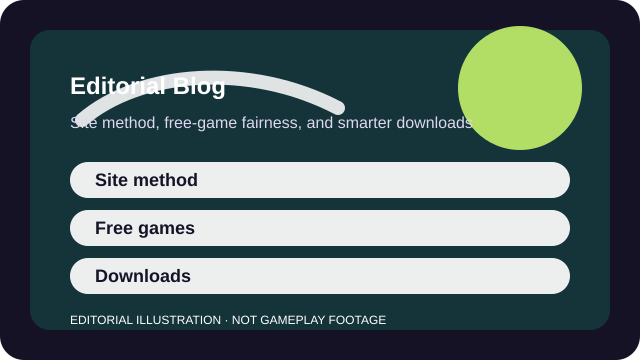

WHY THIS BLOG EXISTS
Short editorial pieces for questions that do not belong on one game page
These articles explain how we update pages, how to evaluate free games, and how to make better install decisions before a game ever reaches your hard drive.
The point is not to publish filler commentary. Each post is meant to answer a practical question that can improve the rest of the site: how to judge short-session fit, what free-to-play fairness looks like, and how update integrity should actually work.

SITE METHOD
How this publishing model stays honest
EDITORIAL
How GameRank Hub Updates Rankings and Fit Profiles Without Fake Freshness
What counts as a material update, why date integrity matters, and why not every seasonal patch deserves a brand-new verdict.
Read article →PLAYER DECISIONS
How to choose games and free-to-play models more clearly
DISCOVERY
How to Choose a Game for Short Sessions That Still Feels Worth It
Use queue time, restart friction, interruption tolerance, and long-term goal fit instead of just looking at match length.
Read article →ANALYSIS
What Makes a Free Game Actually Player-Friendly?
A free game earns trust when access is generous, monetization is legible, and the best loop still works when you spend nothing.
Read article →CHECKLIST
Seven Checks Before You Download a New Game
Run through compatibility, time, social, spend, and accessibility checks before a big install or a one-night friend plan.
Read article →AT A GLANCE
What each article helps you answer
| Article | Main question answered |
|---|---|
| How GameRank Hub Updates Rankings and Fit Profiles Without Fake Freshness | What counts as a material update, why date integrity matters, and why not every seasonal patch deserves a brand-new verdict. |
| How to Choose a Game for Short Sessions That Still Feels Worth It | Use queue time, restart friction, interruption tolerance, and long-term goal fit instead of just looking at match length. |
| What Makes a Free Game Actually Player-Friendly? | A free game earns trust when access is generous, monetization is legible, and the best loop still works when you spend nothing. |
| Seven Checks Before You Download a New Game | Run through compatibility, time, social, spend, and accessibility checks before a big install or a one-night friend plan. |
SOURCES AND LIMITS
How these articles should be used
- Choose what to read before a download or return-to-play decision.
- Understand the site's publishing model before assuming what a date means.
- Compare free-to-play pressures at a higher level than one game page allows.
- Official store terms or support pages.
- The individual profile when you need game-specific source links.
- Hands-on technical testing across every platform.